# System libraries
import glob
# ML libraries
import pandas as pd
import numpy as np
from scipy import stats
import statsmodels.api as sm
from statsmodels.tsa.seasonal import seasonal_decompose
from statsmodels.tsa.ar_model import AutoReg
from statsmodels.tsa.stattools import adfuller, kpss
from statsmodels.tsa.arima.model import ARIMA
from arch.unitroot import PhillipsPerron, DFGLS
import xgboost as xgb
from numpy import argmax
from sklearn.metrics import accuracy_score, precision_recall_curve
from sklearn.model_selection import train_test_split
# Plotting libraries
import matplotlib.pyplot as plt
import seaborn as sns
%matplotlib inlinePOC Loan Rates Forecast Model
1. Executive Summary
2. Model Information
3. Conceptual Soundness
4. Model Development
4.1. Data Engineering
4.1.1. Data Collection
Setup
Load FRED Data
def merge_fred_csv_files(file_pattern):
# Use glob to find all files matching the specified pattern
file_list = glob.glob(file_pattern)
# Initialize an empty list to store individual DataFrames
dataframes = []
# Iterate through each file in the file list
for file in file_list:
# Read the CSV file into a DataFrame
df = pd.read_csv(file, parse_dates=['DATE'], index_col='DATE')
# Add the DataFrame to the list of DataFrames
dataframes.append(df)
# Merge all the DataFrames in the list into a single DataFrame
merged_df = pd.concat(dataframes, axis=1)
return merged_dffile_pattern = '../datasets/fred/*.csv'
df = merge_fred_csv_files(file_pattern)
display(df)| GDPC1 | GS5 | GS10 | GS3 | MORTGAGE30US | UNRATE | CPIAUCSL | FEDFUNDS | GDP | |
|---|---|---|---|---|---|---|---|---|---|
| DATE | |||||||||
| 1947-01-01 | 2034.450 | NaN | NaN | NaN | NaN | NaN | 21.48 | NaN | 243.164 |
| 1947-02-01 | NaN | NaN | NaN | NaN | NaN | NaN | 21.62 | NaN | NaN |
| 1947-03-01 | NaN | NaN | NaN | NaN | NaN | NaN | 22.00 | NaN | NaN |
| 1947-04-01 | 2029.024 | NaN | NaN | NaN | NaN | NaN | 22.00 | NaN | 245.968 |
| 1947-05-01 | NaN | NaN | NaN | NaN | NaN | NaN | 21.95 | NaN | NaN |
| ... | ... | ... | ... | ... | ... | ... | ... | ... | ... |
| 2023-04-01 | NaN | NaN | 3.46 | NaN | NaN | NaN | NaN | NaN | NaN |
| 2023-04-06 | NaN | NaN | NaN | NaN | 6.28 | NaN | NaN | NaN | NaN |
| 2023-04-13 | NaN | NaN | NaN | NaN | 6.27 | NaN | NaN | NaN | NaN |
| 2023-04-20 | NaN | NaN | NaN | NaN | 6.39 | NaN | NaN | NaN | NaN |
| 2023-04-27 | NaN | NaN | NaN | NaN | 6.43 | NaN | NaN | NaN | NaN |
3551 rows × 9 columns
Preselection of variables.
selected_cols = ['MORTGAGE30US', 'UNRATE', 'GS10', 'FEDFUNDS']
df = df[selected_cols]Plot time series.
def plot_time_series(df, cols_to_plot=None, title=''):
"""
Plot multiple time-series in the same axes using seaborn.
:param df: DataFrame with time-series data
:param cols_to_plot: List of column names to plot. If None, plot all columns in df.
:param title: Title of the plot, default is ''
"""
if cols_to_plot is None:
cols_to_plot = df.columns.tolist()
# Create a new DataFrame with the columns to plot
plot_df = df[cols_to_plot]
# Set seaborn plot style
sns.set(style="darkgrid")
# Plot the time-series data
plt.figure(figsize=(12, 6))
for col in plot_df.columns:
sns.lineplot(data=plot_df[col], label=col)
plt.xlabel('Date')
plt.ylabel('Value')
plt.title(title)
plt.legend()
plt.show()plot_time_series(df, title='All Variables')
4.1.2. Data Description
df.info()<class 'pandas.core.frame.DataFrame'>
DatetimeIndex: 3551 entries, 1947-01-01 to 2023-04-27
Data columns (total 4 columns):
# Column Non-Null Count Dtype
--- ------ -------------- -----
0 MORTGAGE30US 2718 non-null float64
1 UNRATE 903 non-null float64
2 GS10 841 non-null float64
3 FEDFUNDS 825 non-null float64
dtypes: float64(4)
memory usage: 138.7 KB4.1.3. Data Quality
Frequency of Series
Distribution of frequencies in the data.
def plot_time_difference_frequency(df):
# Calculate the time differences between consecutive entries
time_diff = df.index.to_series().diff().dropna()
# Convert the time differences to a suitable unit (e.g., days)
time_diff_days = time_diff.dt.total_seconds() / (60 * 60 * 24)
# Create a DataFrame with the time differences
time_diff_df = pd.DataFrame({'Time Differences (Days)': time_diff_days})
# Plot the frequency distribution of the time differences
sns.histplot(data=time_diff_df, x='Time Differences (Days)', bins=50, kde=False)
plt.xlabel('Time Differences (Days)')
plt.ylabel('Frequency')
plt.show()plot_time_difference_frequency(df)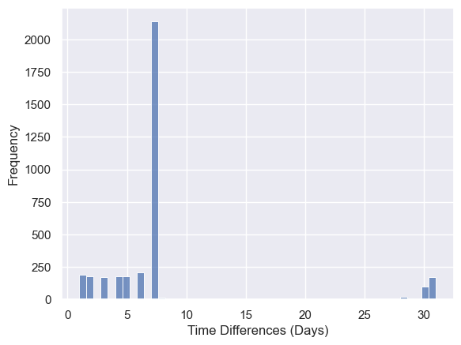
Identify frequencies for each variable.
def identify_frequencies(df):
"""
Identify the frequency of each series in the DataFrame.
:param df: Time-series DataFrame
:return: DataFrame with two columns: 'Variable' and 'Frequency'
"""
frequencies = []
for column in df.columns:
series = df[column].dropna()
if not series.empty:
freq = pd.infer_freq(series.index)
if freq == 'MS' or freq == 'M':
label = 'Monthly'
elif freq == 'Q':
label = 'Quarterly'
elif freq == 'A':
label = 'Yearly'
else:
label = freq
else:
label = None
frequencies.append({'Variable': column, 'Frequency': label})
freq_df = pd.DataFrame(frequencies)
return freq_dffrequencies = identify_frequencies(df)
display(frequencies)| Variable | Frequency | |
|---|---|---|
| 0 | MORTGAGE30US | None |
| 1 | UNRATE | Monthly |
| 2 | GS10 | Monthly |
| 3 | FEDFUNDS | Monthly |
Handling frequencies.
df = df.resample('MS').last()
frequencies = identify_frequencies(df)
display(frequencies)| Variable | Frequency | |
|---|---|---|
| 0 | MORTGAGE30US | Monthly |
| 1 | UNRATE | Monthly |
| 2 | GS10 | Monthly |
| 3 | FEDFUNDS | Monthly |
Missing Values
Step 1: Identify Missing Values
Total number of missing values.
def plot_missing_values_bar(df):
"""
Plot a bar chart displaying the total number of missing values per variable (column) in a time-series DataFrame using seaborn.
:param df: Time-series DataFrame
"""
# Calculate the total number of missing values per column
missing_values = df.isnull().sum()
# Set seaborn plot style
sns.set(style="darkgrid")
# Plot the bar chart
plt.figure(figsize=(12, 6))
sns.barplot(x=missing_values.index, y=missing_values.values)
plt.xticks(rotation=45, ha='right')
plt.xlabel('Variables (Columns)')
plt.ylabel('Number of Missing Values')
plt.title('Total Number of Missing Values per Variable')
plt.show()plot_missing_values_bar(df)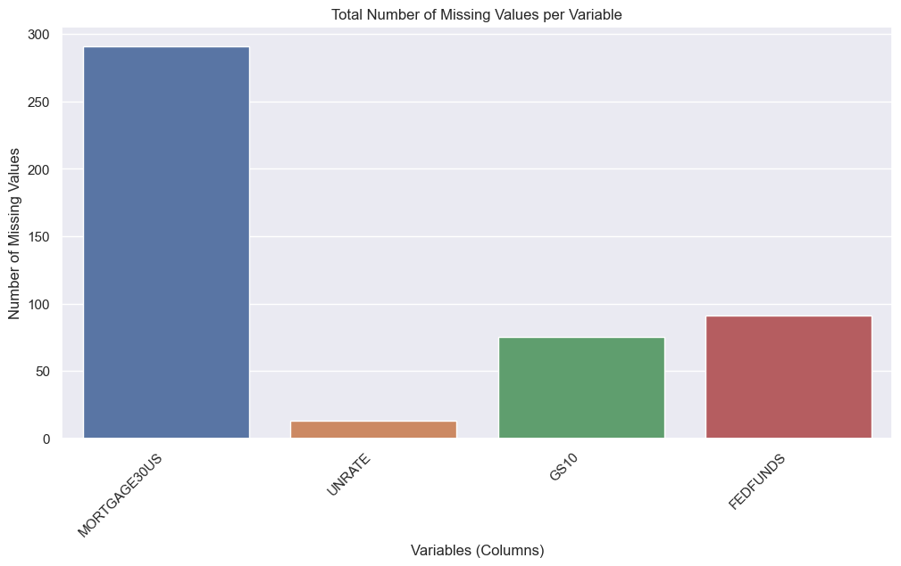
Heatmap of missing values.
def plot_missing_values_heatmap(df, start_year=None, end_year=None):
"""
Plot a heatmap of missing values with actual years in rows using seaborn.
:param df: Time-series DataFrame
:param start_year: Start year for zooming in, defaults to None
:param end_year: End year for zooming in, defaults to None
"""
# Filter the DataFrame based on the specified start_year and end_year
if start_year:
df = df[df.index.year >= start_year]
if end_year:
df = df[df.index.year <= end_year]
# Create a boolean mask for missing values
missing_mask = df.isnull()
# Set seaborn plot style
sns.set(style="darkgrid")
# Plot the heatmap
plt.figure(figsize=(12, 6))
sns.heatmap(missing_mask.T, cmap='viridis', cbar=False, xticklabels=False)
# Add actual years on the x-axis
years = df.index.year.unique()
xticks = [df.index.get_loc(df.index[df.index.year == year][0]) for year in years]
plt.xticks(xticks, years, rotation=45, ha='right')
plt.ylabel('Columns')
plt.xlabel('Rows (Years)')
plt.title('Missing Values Heatmap with Actual Years in Rows')
plt.show()plot_missing_values_heatmap(df)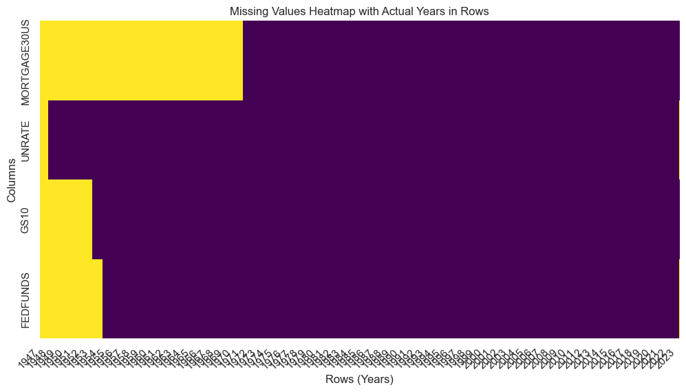
Step 2: Handling Missing Values
Drop missing values.
df = df.dropna()plot_missing_values_bar(df)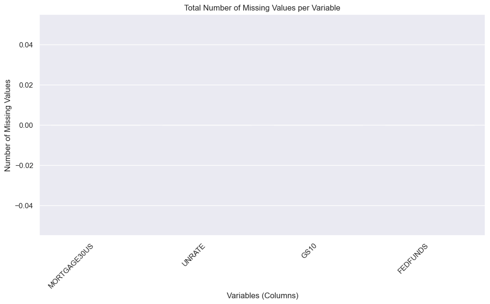
plot_missing_values_heatmap(df)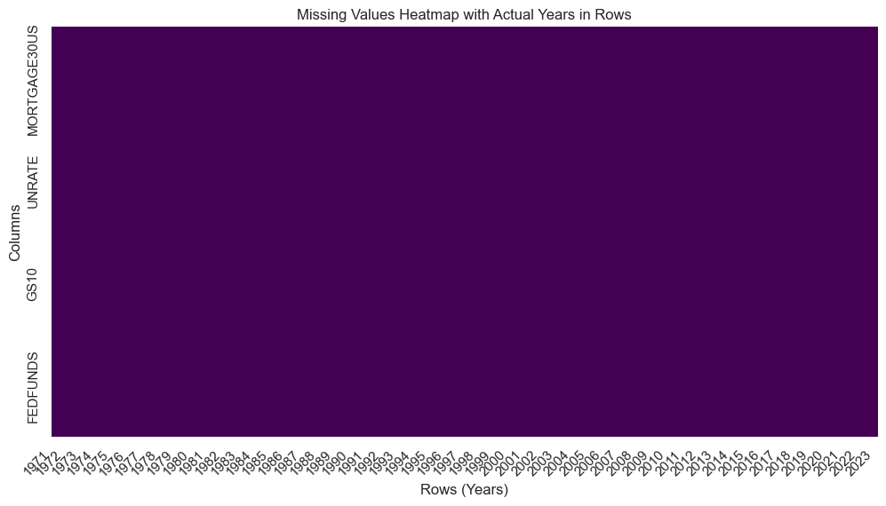
Outliers
Step 1: Identify Outliers
def identify_outliers(df, threshold=3):
z_scores = pd.DataFrame(stats.zscore(df), index=df.index, columns=df.columns)
outliers = z_scores[(z_scores.abs() > threshold).any(axis=1)]
outlier_table = []
for idx, row in outliers.iterrows():
for col in df.columns:
if abs(row[col]) > threshold:
outlier_table.append({"Variable": col, "z-score": row[col], "Threshold": threshold, "Date": idx})
return pd.DataFrame(outlier_table)outliers_table = identify_outliers(df, threshold=3)
display(outliers_table)| Variable | z-score | Threshold | Date | |
|---|---|---|---|---|
| 0 | FEDFUNDS | 3.106442 | 3 | 1980-03-01 |
| 1 | FEDFUNDS | 3.212296 | 3 | 1980-04-01 |
| 2 | FEDFUNDS | 3.537417 | 3 | 1980-12-01 |
| 3 | FEDFUNDS | 3.582783 | 3 | 1981-01-01 |
| 4 | FEDFUNDS | 3.441645 | 3 | 1981-05-01 |
| 5 | FEDFUNDS | 3.587823 | 3 | 1981-06-01 |
| 6 | FEDFUNDS | 3.572701 | 3 | 1981-07-01 |
| 7 | FEDFUNDS | 3.265222 | 3 | 1981-08-01 |
| 8 | MORTGAGE30US | 3.246766 | 3 | 1981-09-01 |
| 9 | MORTGAGE30US | 3.271251 | 3 | 1981-10-01 |
| 10 | MORTGAGE30US | 3.011098 | 3 | 1982-01-01 |
| 11 | UNRATE | 5.011303 | 3 | 2020-04-01 |
| 12 | UNRATE | 4.128421 | 3 | 2020-05-01 |
Plot outliers.
import pandas as pd
import seaborn as sns
import matplotlib.pyplot as plt
def plot_outliers(df, outliers_table, use_subplots=False):
sns.set(style="darkgrid")
if use_subplots:
n_variables = len(df.columns)
fig, axes = plt.subplots(n_variables, 1, figsize=(12, 3 * n_variables), sharex=True)
for i, col in enumerate(df.columns):
sns.lineplot(data=df, x=df.index, y=col, ax=axes[i], label=col)
variable_outliers = outliers_table[outliers_table["Variable"] == col]
for idx, row in variable_outliers.iterrows():
date = row["Date"]
outlier_value = df.loc[date, col]
axes[i].scatter(date, outlier_value, marker="o", s=100, c="red", label="Outlier" if idx == 0 else "")
axes[i].legend()
axes[i].set_ylabel("Value")
axes[i].set_title(f"Time Series with Outliers for {col}")
plt.xlabel("Date")
plt.tight_layout()
else:
plt.figure(figsize=(12, 3))
for col in df.columns:
sns.lineplot(data=df, x=df.index, y=col, label=col)
plotted_outlier_variables = set()
for idx, row in outliers_table.iterrows():
date = row["Date"]
variable = row["Variable"]
outlier_value = df.loc[date, variable]
if variable not in plotted_outlier_variables:
plt.scatter(date, outlier_value, marker="o", s=100, c="red", label=f"Outlier ({variable})")
plotted_outlier_variables.add(variable)
else:
plt.scatter(date, outlier_value, marker="o", s=100, c="red")
plt.legend()
plt.xlabel("Date")
plt.ylabel("Value")
plt.title("Time Series with Outliers")
plt.show()plot_outliers(df, outliers_table, use_subplots=True)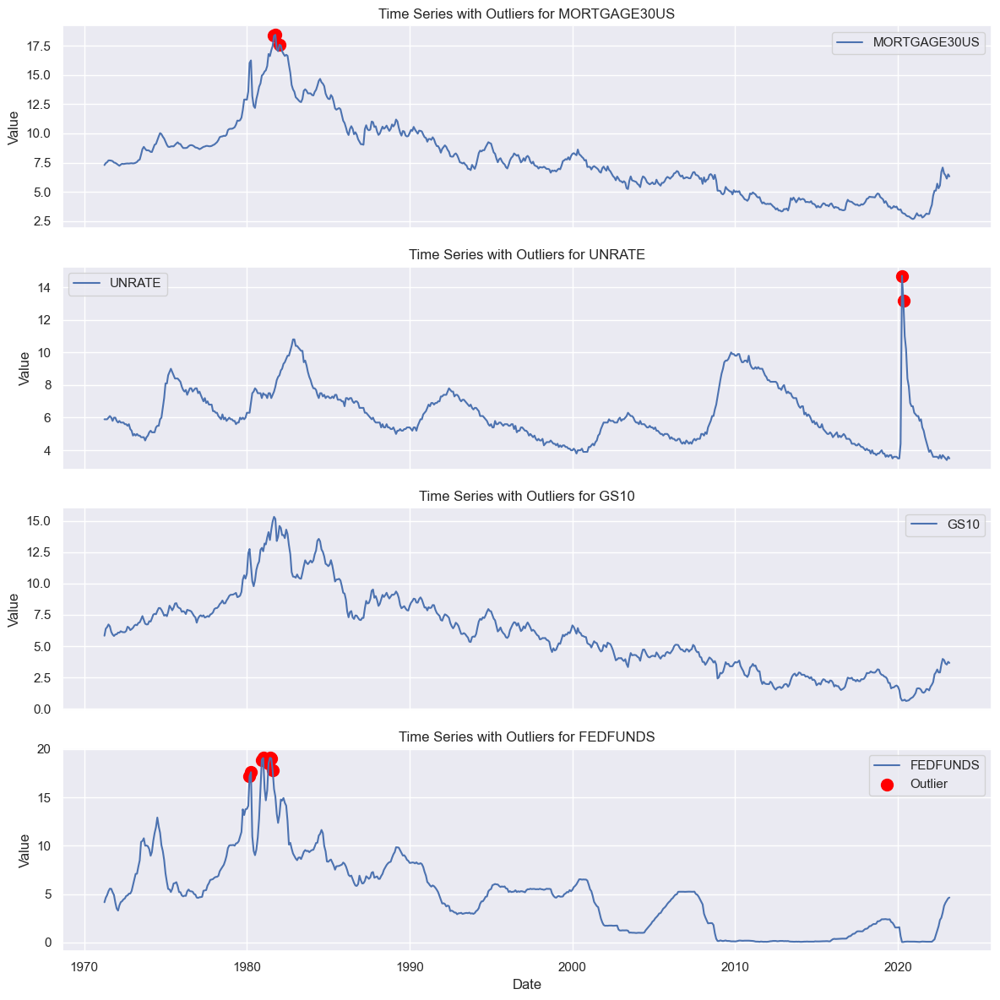
Step 2: Handling Outliers
4.2. Exploratory Data Analysis
4.2.1. Univariate Analysis
Visual Inspection
Line plots.
plot_time_series(df, title='All Variables')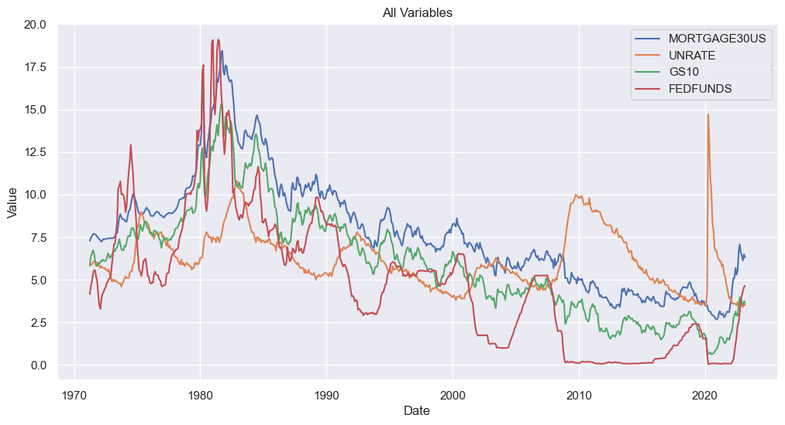
Seasonality
Step 1: Compute Seasonal Decomposition
def compute_seasonal_decomposition(data, model='additive'):
"""
Compute seasonal decomposition for all time-series in a DataFrame and store all the components in a new DataFrame.
:param data: DataFrame with time-series data
:param period: Number of observations in each seasonal period
:return: DataFrame with seasonal, trend, and residual components for all time-series in the input DataFrame
"""
# Initialize an empty DataFrame to store the components for each time-series
decomp_df = pd.DataFrame()
# Loop over each column in the input DataFrame and perform seasonal decomposition
for col in data.columns:
res = seasonal_decompose(data[col], model=model)
decomp_df[f'{col}_seasonal'] = res.seasonal
decomp_df[f'{col}_trend'] = res.trend
decomp_df[f'{col}_residual'] = res.resid
# Set the index of the decomposed DataFrame to be the same as the input DataFrame
decomp_df.index = data.index
return decomp_dfdecomp_df = compute_seasonal_decomposition(df)Step 2: Visualize Seasonal Decomposition
def plot_seasonal_components(decomp_df):
"""
Plot all seasonal, trend, and residual components for each variable in a DataFrame.
:param decomp_df: DataFrame with seasonal, trend, and residual components for each variable
"""
# Initialize a figure with subplots for each variable and component
fig, axs = plt.subplots(nrows=len(decomp_df.columns) // 3, ncols=3, figsize=(12, 4 * (len(decomp_df.columns) // 3)))
# Loop over each variable in the input DataFrame and plot the seasonal, trend, and residual components
for i, col in enumerate(decomp_df.columns[::3]):
axs[i, 0].plot(decomp_df.index, decomp_df[f'{col}'])
axs[i, 0].set_title(f'Seasonal: {col[:-9]}')
axs[i, 1].plot(decomp_df.index, decomp_df[f'{col[:-9]}_trend'])
axs[i, 1].set_title(f'Trend: {col[:-9]}')
axs[i, 2].plot(decomp_df.index, decomp_df[f'{col[:-9]}_residual'])
axs[i, 2].set_title(f'Residual: {col[:-9]}')
# Set the figure title
fig.suptitle('Seasonal Decomposition', fontsize=16)
# Adjust the spacing between subplots
fig.tight_layout()
# Show the plot
plt.show()plot_seasonal_components(decomp_df)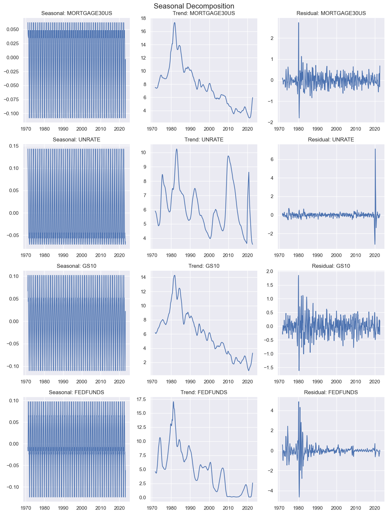
Step 3: Residual Analysis
Stationarity
Step 1: Compute Unit Root Tests on Levels
def test_stationarity(data, threshold=0.05):
"""
Perform multiple stationarity tests on each time series in a DataFrame.
:param data: DataFrame with time-series data
:return: DataFrame with test results (Variable, Test, p-value, Threshold, Pass/Fail, Decision)
"""
# Initialize an empty DataFrame to store the test results
test_results = pd.DataFrame(columns=['Variable', 'Test', 'p-value', 'Threshold', 'Pass/Fail', 'Decision'])
# Loop over each column in the input DataFrame and perform stationarity tests
for col in data.columns:
# Perform the ADF test
adf_result = adfuller(data[col], autolag='AIC')
adf_pvalue = adf_result[1]
adf_pass_fail = adf_pvalue < threshold
adf_decision = 'Stationary' if adf_pass_fail else 'Non-stationary'
test_results = test_results.append({
'Variable': col,
'Test': 'ADF',
'p-value': adf_pvalue,
'Threshold': threshold,
'Pass/Fail': adf_pass_fail,
'Decision': adf_decision
}, ignore_index=True)
# Perform the KPSS test
kpss_result = kpss(data[col], regression='c', nlags='auto')
kpss_pvalue = kpss_result[1]
kpss_pass_fail = kpss_pvalue > threshold
kpss_decision = 'Stationary' if kpss_pass_fail else 'Non-stationary'
test_results = test_results.append({
'Variable': col,
'Test': 'KPSS',
'p-value': kpss_pvalue,
'Threshold': threshold,
'Pass/Fail': kpss_pass_fail,
'Decision': kpss_decision
}, ignore_index=True)
# Perform the Phillips-Perron test
pp_result = PhillipsPerron(data[col], trend='ct')
pp_pvalue = pp_result.pvalue
pp_threshold = threshold
pp_pass_fail = pp_pvalue < pp_threshold
pp_decision = 'Stationary' if pp_pass_fail else 'Non-stationary'
test_results = test_results.append({
'Variable': col,
'Test': 'PhillipsPerron',
'p-value': pp_pvalue,
'Threshold': pp_threshold,
'Pass/Fail': pp_pass_fail,
'Decision': pp_decision
}, ignore_index=True)
# Perform the DF-GLS test
dfgls_result = DFGLS(data[col], trend='ct')
dfgls_pvalue = dfgls_result.pvalue
dfgls_threshold = threshold
dfgls_pass_fail = dfgls_pvalue < dfgls_threshold
dfgls_decision = 'Stationary' if dfgls_pass_fail else 'Non-stationary'
test_results = test_results.append({
'Variable': col,
'Test': 'DFGLS',
'p-value': dfgls_pvalue,
'Threshold': dfgls_threshold,
'Pass/Fail': dfgls_pass_fail,
'Decision': dfgls_decision
}, ignore_index=True)
return test_resultstest_stationarity(df)/Users/juanvalidmind/Library/Caches/pypoetry/virtualenvs/validmind-eEL8LtKG-py3.10/lib/python3.10/site-packages/statsmodels/tsa/stattools.py:2018: InterpolationWarning: The test statistic is outside of the range of p-values available in the
look-up table. The actual p-value is smaller than the p-value returned.
warnings.warn(
/Users/juanvalidmind/Library/Caches/pypoetry/virtualenvs/validmind-eEL8LtKG-py3.10/lib/python3.10/site-packages/statsmodels/tsa/stattools.py:2018: InterpolationWarning: The test statistic is outside of the range of p-values available in the
look-up table. The actual p-value is smaller than the p-value returned.
warnings.warn(
/Users/juanvalidmind/Library/Caches/pypoetry/virtualenvs/validmind-eEL8LtKG-py3.10/lib/python3.10/site-packages/statsmodels/tsa/stattools.py:2018: InterpolationWarning: The test statistic is outside of the range of p-values available in the
look-up table. The actual p-value is smaller than the p-value returned.
warnings.warn(| Variable | Test | p-value | Threshold | Pass/Fail | Decision | |
|---|---|---|---|---|---|---|
| 0 | MORTGAGE30US | ADF | 0.671948 | 0.05 | False | Non-stationary |
| 1 | MORTGAGE30US | KPSS | 0.010000 | 0.05 | False | Non-stationary |
| 2 | MORTGAGE30US | PhillipsPerron | 0.266671 | 0.05 | False | Non-stationary |
| 3 | MORTGAGE30US | DFGLS | 0.633164 | 0.05 | False | Non-stationary |
| 4 | UNRATE | ADF | 0.019395 | 0.05 | True | Stationary |
| 5 | UNRATE | KPSS | 0.070375 | 0.05 | True | Stationary |
| 6 | UNRATE | PhillipsPerron | 0.023946 | 0.05 | True | Stationary |
| 7 | UNRATE | DFGLS | 0.017522 | 0.05 | True | Stationary |
| 8 | GS10 | ADF | 0.709954 | 0.05 | False | Non-stationary |
| 9 | GS10 | KPSS | 0.010000 | 0.05 | False | Non-stationary |
| 10 | GS10 | PhillipsPerron | 0.148107 | 0.05 | False | Non-stationary |
| 11 | GS10 | DFGLS | 0.505034 | 0.05 | False | Non-stationary |
| 12 | FEDFUNDS | ADF | 0.105801 | 0.05 | False | Non-stationary |
| 13 | FEDFUNDS | KPSS | 0.010000 | 0.05 | False | Non-stationary |
| 14 | FEDFUNDS | PhillipsPerron | 0.048473 | 0.05 | True | Stationary |
| 15 | FEDFUNDS | DFGLS | 0.058910 | 0.05 | False | Non-stationary |
Step 2: Compute Unit Root Tests on First Difference
Take first difference.
df_diff = df.diff().dropna()test_stationarity(df_diff)/Users/juanvalidmind/Library/Caches/pypoetry/virtualenvs/validmind-eEL8LtKG-py3.10/lib/python3.10/site-packages/statsmodels/tsa/stattools.py:2022: InterpolationWarning: The test statistic is outside of the range of p-values available in the
look-up table. The actual p-value is greater than the p-value returned.
warnings.warn(
/Users/juanvalidmind/Library/Caches/pypoetry/virtualenvs/validmind-eEL8LtKG-py3.10/lib/python3.10/site-packages/statsmodels/tsa/stattools.py:2022: InterpolationWarning: The test statistic is outside of the range of p-values available in the
look-up table. The actual p-value is greater than the p-value returned.
warnings.warn(
/Users/juanvalidmind/Library/Caches/pypoetry/virtualenvs/validmind-eEL8LtKG-py3.10/lib/python3.10/site-packages/statsmodels/tsa/stattools.py:2022: InterpolationWarning: The test statistic is outside of the range of p-values available in the
look-up table. The actual p-value is greater than the p-value returned.
warnings.warn(
/Users/juanvalidmind/Library/Caches/pypoetry/virtualenvs/validmind-eEL8LtKG-py3.10/lib/python3.10/site-packages/statsmodels/tsa/stattools.py:2022: InterpolationWarning: The test statistic is outside of the range of p-values available in the
look-up table. The actual p-value is greater than the p-value returned.
warnings.warn(| Variable | Test | p-value | Threshold | Pass/Fail | Decision | |
|---|---|---|---|---|---|---|
| 0 | MORTGAGE30US | ADF | 2.156453e-30 | 0.05 | True | Stationary |
| 1 | MORTGAGE30US | KPSS | 1.000000e-01 | 0.05 | True | Stationary |
| 2 | MORTGAGE30US | PhillipsPerron | 0.000000e+00 | 0.05 | True | Stationary |
| 3 | MORTGAGE30US | DFGLS | 0.000000e+00 | 0.05 | True | Stationary |
| 4 | UNRATE | ADF | 5.611475e-26 | 0.05 | True | Stationary |
| 5 | UNRATE | KPSS | 1.000000e-01 | 0.05 | True | Stationary |
| 6 | UNRATE | PhillipsPerron | 0.000000e+00 | 0.05 | True | Stationary |
| 7 | UNRATE | DFGLS | 0.000000e+00 | 0.05 | True | Stationary |
| 8 | GS10 | ADF | 2.036674e-09 | 0.05 | True | Stationary |
| 9 | GS10 | KPSS | 1.000000e-01 | 0.05 | True | Stationary |
| 10 | GS10 | PhillipsPerron | 0.000000e+00 | 0.05 | True | Stationary |
| 11 | GS10 | DFGLS | 1.075000e-01 | 0.05 | False | Non-stationary |
| 12 | FEDFUNDS | ADF | 6.632874e-05 | 0.05 | True | Stationary |
| 13 | FEDFUNDS | KPSS | 1.000000e-01 | 0.05 | True | Stationary |
| 14 | FEDFUNDS | PhillipsPerron | 1.719033e-22 | 0.05 | True | Stationary |
| 15 | FEDFUNDS | DFGLS | 5.444185e-02 | 0.05 | False | Non-stationary |
AR Analysis
Step 1: Calculate AR Orders
def calculate_ar_orders(dataset, max_order=3):
"""
This function calculates the autoregressive order of all time series in a dataset.
Parameters:
dataset (pd.DataFrame): The dataset containing the time series.
max_order (int): The maximum order to consider for the autoregressive models.
Returns:
pd.DataFrame: A table with the autoregressive order, AIC, and BIC for orders 0 up to max_order.
"""
# Initialize an empty list to store the results
results = []
# Iterate over each column (time series) in the dataset
for col in dataset.columns:
time_series = dataset[col]
# Test for stationarity using Augmented Dickey-Fuller test
adf_result = adfuller(time_series)
if adf_result[1] > 0.05:
time_series = time_series.diff().dropna() # Apply first difference to make the series stationary
# Test different autoregressive orders and store the AIC and BIC values
for order in range(max_order + 1):
model = AutoReg(time_series, lags=order, old_names=False)
result = model.fit()
# Add the current time series, order, AIC, and BIC to the results list
results.append({'Variable': col, 'AR order': order, 'AIC': result.aic, 'BIC': result.bic})
# Convert the results list to a DataFrame and return it
return pd.DataFrame(results)calculate_ar_orders(df_diff)| Variable | AR order | AIC | BIC | |
|---|---|---|---|---|
| 0 | MORTGAGE30US | 0 | 291.177506 | 300.046599 |
| 1 | MORTGAGE30US | 1 | 246.637029 | 259.935849 |
| 2 | MORTGAGE30US | 2 | 223.310101 | 241.035426 |
| 3 | MORTGAGE30US | 3 | 225.331792 | 247.480389 |
| 4 | UNRATE | 0 | 835.075578 | 843.944671 |
| 5 | UNRATE | 1 | 835.941726 | 849.240546 |
| 6 | UNRATE | 2 | 833.607234 | 851.332559 |
| 7 | UNRATE | 3 | 835.222318 | 857.370915 |
| 8 | GS10 | 0 | 243.604950 | 252.474043 |
| 9 | GS10 | 1 | 179.889575 | 193.188396 |
| 10 | GS10 | 2 | 155.917382 | 173.642706 |
| 11 | GS10 | 3 | 155.305036 | 177.453633 |
| 12 | FEDFUNDS | 0 | 992.528777 | 1001.397870 |
| 13 | FEDFUNDS | 1 | 879.316228 | 892.615048 |
| 14 | FEDFUNDS | 2 | 858.467020 | 876.192344 |
| 15 | FEDFUNDS | 3 | 858.142003 | 880.290601 |
Step 2: Selection of AR Order
MA Analysis
Step 1: Calculate MA Orders
def calculate_ma_orders(dataset, max_order=3):
"""
This function calculates the moving average order of all time series in a dataset.
Parameters:
dataset (pd.DataFrame): The dataset containing the time series.
max_order (int): The maximum order to consider for the moving average models.
Returns:
pd.DataFrame: A table with the moving average order, AIC, and BIC for orders 0 up to max_order.
"""
# Initialize an empty list to store the results
results = []
# Iterate over each column (time series) in the dataset
for col in dataset.columns:
time_series = dataset[col]
# Test for stationarity using Augmented Dickey-Fuller test
adf_result = adfuller(time_series)
if adf_result[1] > 0.05:
time_series = time_series.diff().dropna() # Apply first difference to make the series stationary
# Test different moving average orders and store the AIC and BIC values
for order in range(max_order + 1):
model = ARIMA(time_series, order=(0, 0, order))
result = model.fit()
# Add the current time series, order, AIC, and BIC to the results list
results.append({'Variable': col, 'MA order': order, 'AIC': result.aic, 'BIC': result.bic})
# Convert the results list to a DataFrame and return it
return pd.DataFrame(results)calculate_ma_orders(df_diff)| Variable | MA order | AIC | BIC | |
|---|---|---|---|---|
| 0 | MORTGAGE30US | 0 | 291.177507 | 300.046600 |
| 1 | MORTGAGE30US | 1 | 228.313186 | 241.616825 |
| 2 | MORTGAGE30US | 2 | 227.394618 | 245.132804 |
| 3 | MORTGAGE30US | 3 | 225.782939 | 247.955672 |
| 4 | UNRATE | 0 | 835.075578 | 843.944671 |
| 5 | UNRATE | 1 | 836.126269 | 849.429909 |
| 6 | UNRATE | 2 | 833.512857 | 851.251043 |
| 7 | UNRATE | 3 | 835.509496 | 857.682228 |
| 8 | GS10 | 0 | 243.604950 | 252.474043 |
| 9 | GS10 | 1 | 155.604373 | 168.908013 |
| 10 | GS10 | 2 | 152.550224 | 170.288410 |
| 11 | GS10 | 3 | 154.471588 | 176.644321 |
| 12 | FEDFUNDS | 0 | 992.528777 | 1001.397870 |
| 13 | FEDFUNDS | 1 | 865.158571 | 878.462211 |
| 14 | FEDFUNDS | 2 | 864.192973 | 881.931159 |
| 15 | FEDFUNDS | 3 | 865.935637 | 888.108370 |
Step 2: Selection of MA Order
4.2.2. Multivariate Analysis
Correlations
Step 1: Compute Correlation Matrix on Levels
def plot_corr_heatmap(df):
# Compute correlation matrix
corr_matrix = df.corr()
# Plot heatmap
sns.heatmap(corr_matrix, annot=True, cmap='coolwarm', center=0)
# Set plot title
plt.title('Correlation Matrix Heatmap')
# Show plot
plt.show()Corrrelations across Levels.
plot_corr_heatmap(df)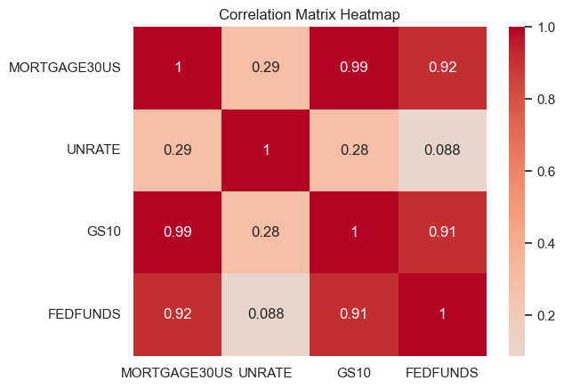
Step 2: Compute Correlation Matrix on First Difference
Correlations across First Differences.
plot_corr_heatmap(df_diff)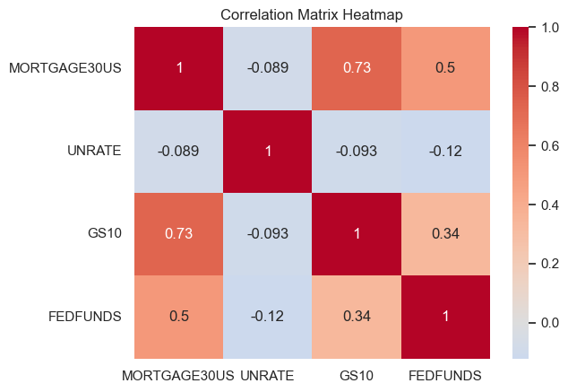
Step 3: Reasoning
Scatter Plots
Step 1: Compute Scatter Plots on Levels
def plot_scatter_pairs(df):
# Compute pairwise scatter plots
sns.pairplot(df, kind='scatter')
# Show plot
plt.show()plot_scatter_pairs(df)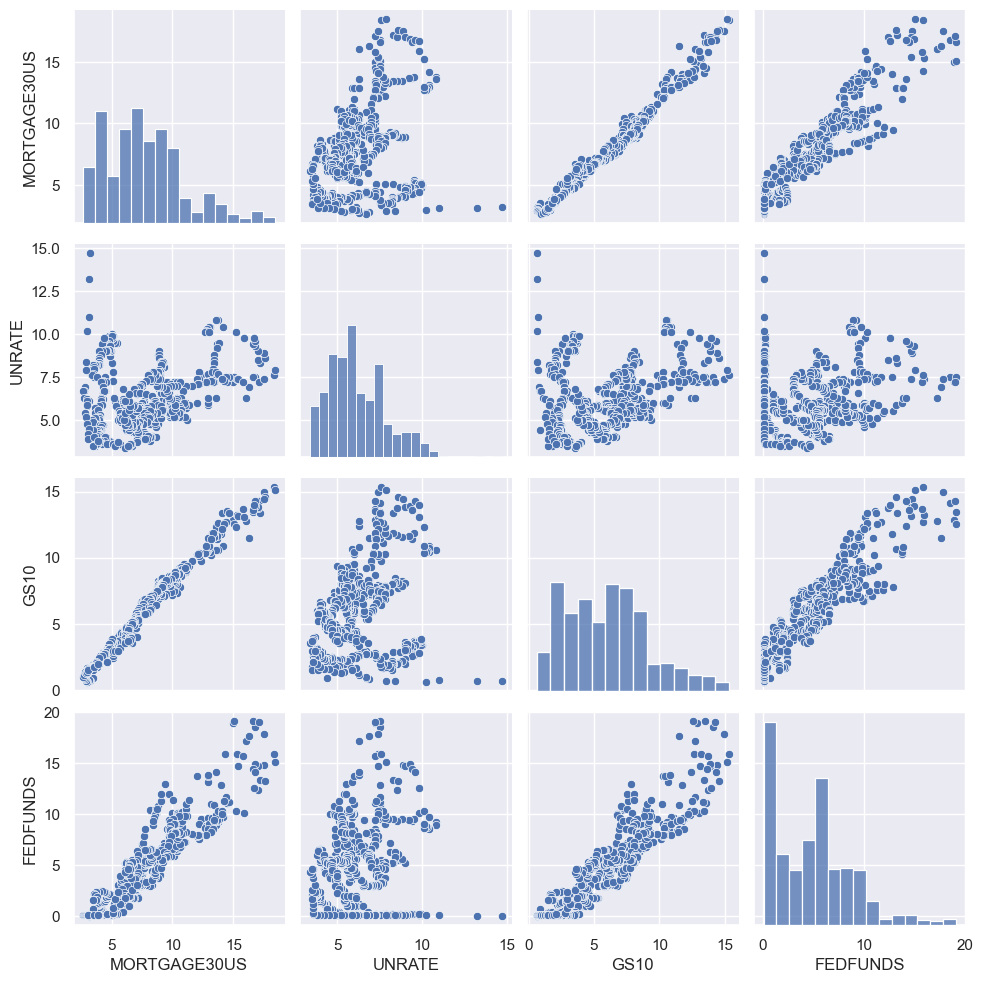
Step 2: Compute Scatter Plots on First Difference
Compute first difference.
plot_scatter_pairs(df_diff)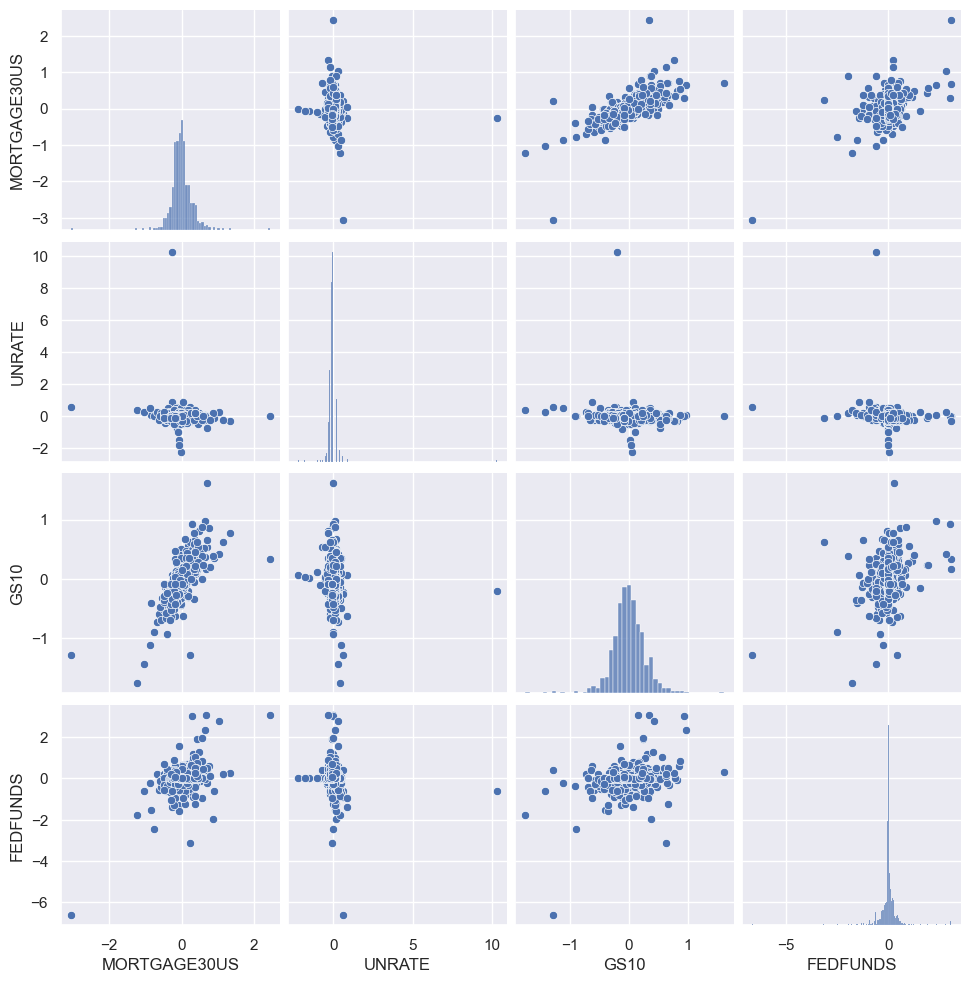
Step 3: Reasoning
Lag Analsyis
Step 1: Compute Correlations at Multiple Lags
def plot_heatmap_correlations(df, target_col, independent_vars, num_lags=10):
"""
Calculate the correlation between the target variable and the lags of independent variables in the dataset,
and plot a heatmap of these correlations.
:param df: DataFrame containing the target variable and independent variables of interest
:param target_col: Column name of the target variable in the DataFrame
:param independent_vars: List of column names of the independent variables in the DataFrame
:param num_lags: Number of lags to calculate (default is 10)
"""
correlations = np.zeros((len(independent_vars), num_lags + 1))
for i, ind_var_col in enumerate(independent_vars):
for lag in range(num_lags + 1):
# Create a new DataFrame with the original and lagged variable
temp_df = pd.DataFrame({target_col: df[target_col],
f'{ind_var_col}_lag{lag}': df[ind_var_col].shift(lag)})
# Drop NaN rows
temp_df = temp_df.dropna()
# Calculate the correlation between the target variable and the lagged independent variable
corr = temp_df[target_col].corr(temp_df[f'{ind_var_col}_lag{lag}'])
# Store the correlation in the correlations matrix
correlations[i, lag] = corr
# Create a DataFrame with the correlations matrix
correlation_df = pd.DataFrame(correlations, columns=[f'lag_{i}' for i in range(num_lags + 1)], index=independent_vars)
# Plot the heatmap
plt.figure(figsize=(12, 3))
sns.heatmap(correlation_df, annot=True, cmap='coolwarm', vmin=-1, vmax=1)
plt.title('Heatmap of Correlations between Target Variable and Lags of Independent Variables')
plt.xlabel('Lags')
plt.ylabel('Independent Variables')
plt.show()target_var = 'MORTGAGE30US'
independent_vars = ['GS10', 'UNRATE', 'FEDFUNDS']
plot_heatmap_correlations(df_diff, target_col=target_var, independent_vars=independent_vars, num_lags=10)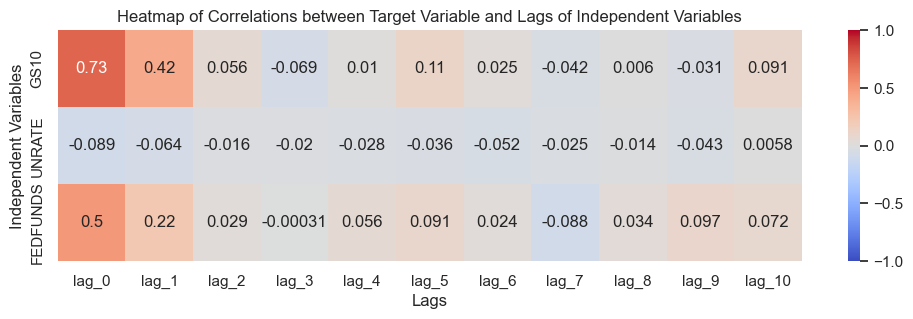
Step 2: Reasoning
4.2.3. Feature Selection
4.3. Model Methodology
4.4. Training Data
4.4.1. Sampling
Step 1: Split dataset into Training and Test
split_index = int(len(df) * 0.8) # use 80% of the data for training
df_train, df_test = df[:split_index], df[split_index:]Step 2: Create a Stationary Train and Test Dataset
# Apply first difference to both training and test df
df_train_diff = df_train.diff().dropna()
df_test_diff = df_test.diff().dropna()4.5. Model Evaluation
Model 1: Loan Rates and FEDFUNDS
Step 1: Fit Model
# Add the independent variables with no intercept
X = df_train_diff['FEDFUNDS']
# Define the dependent variable
y = df_train_diff['MORTGAGE30US']
# Fit the linear regression model
model_1 = sm.OLS(y, X).fit()
# Display the model summary
print(model_1.summary()) OLS Regression Results
=======================================================================================
Dep. Variable: MORTGAGE30US R-squared (uncentered): 0.286
Model: OLS Adj. R-squared (uncentered): 0.284
Method: Least Squares F-statistic: 198.8
Date: Wed, 03 May 2023 Prob (F-statistic): 3.22e-38
Time: 14:12:19 Log-Likelihood: -57.220
No. Observations: 498 AIC: 116.4
Df Residuals: 497 BIC: 120.7
Df Model: 1
Covariance Type: nonrobust
==============================================================================
coef std err t P>|t| [0.025 0.975]
------------------------------------------------------------------------------
FEDFUNDS 0.2901 0.021 14.100 0.000 0.250 0.330
==============================================================================
Omnibus: 139.024 Durbin-Watson: 1.581
Prob(Omnibus): 0.000 Jarque-Bera (JB): 806.633
Skew: 1.080 Prob(JB): 6.95e-176
Kurtosis: 8.849 Cond. No. 1.00
==============================================================================
Notes:
[1] R² is computed without centering (uncentered) since the model does not contain a constant.
[2] Standard Errors assume that the covariance matrix of the errors is correctly specified.Step 2: Reasoning
Model 2: Loan Rates, constant and FEDFUNDS
Step 1: Fit Model
# Add a constant to the independent variables for the linear regression model
X = sm.add_constant(df_train_diff['FEDFUNDS'])
# Define the dependent variable
y = df_train_diff['MORTGAGE30US']
# Fit the linear regression model
model_2 = sm.OLS(y, X).fit()
# Display the model summary
print(model_2.summary()) OLS Regression Results
==============================================================================
Dep. Variable: MORTGAGE30US R-squared: 0.286
Model: OLS Adj. R-squared: 0.284
Method: Least Squares F-statistic: 198.3
Date: Wed, 03 May 2023 Prob (F-statistic): 3.99e-38
Time: 14:12:19 Log-Likelihood: -57.120
No. Observations: 498 AIC: 118.2
Df Residuals: 496 BIC: 126.7
Df Model: 1
Covariance Type: nonrobust
==============================================================================
coef std err t P>|t| [0.025 0.975]
------------------------------------------------------------------------------
const -0.0055 0.012 -0.448 0.654 -0.029 0.018
FEDFUNDS 0.2899 0.021 14.082 0.000 0.249 0.330
==============================================================================
Omnibus: 138.997 Durbin-Watson: 1.581
Prob(Omnibus): 0.000 Jarque-Bera (JB): 806.946
Skew: 1.080 Prob(JB): 5.94e-176
Kurtosis: 8.850 Cond. No. 1.69
==============================================================================
Notes:
[1] Standard Errors assume that the covariance matrix of the errors is correctly specified.Step 2: Reasoning
Model 3: Loan Rates and GS10
# Add a constant to the independent variables for the linear regression model
X = df_train_diff['GS10']
# Define the dependent variable
y = df_train_diff['MORTGAGE30US']
# Fit the linear regression model
model_3 = sm.OLS(y, X).fit()
# Display the model summary
print(model_3.summary()) OLS Regression Results
=======================================================================================
Dep. Variable: MORTGAGE30US R-squared (uncentered): 0.529
Model: OLS Adj. R-squared (uncentered): 0.528
Method: Least Squares F-statistic: 558.1
Date: Wed, 03 May 2023 Prob (F-statistic): 2.80e-83
Time: 14:12:19 Log-Likelihood: 46.439
No. Observations: 498 AIC: -90.88
Df Residuals: 497 BIC: -86.67
Df Model: 1
Covariance Type: nonrobust
==============================================================================
coef std err t P>|t| [0.025 0.975]
------------------------------------------------------------------------------
GS10 0.7428 0.031 23.624 0.000 0.681 0.805
==============================================================================
Omnibus: 216.020 Durbin-Watson: 1.949
Prob(Omnibus): 0.000 Jarque-Bera (JB): 27264.604
Skew: 0.803 Prob(JB): 0.00
Kurtosis: 39.213 Cond. No. 1.00
==============================================================================
Notes:
[1] R² is computed without centering (uncentered) since the model does not contain a constant.
[2] Standard Errors assume that the covariance matrix of the errors is correctly specified.Model 4: Loan Rates, FEDFUNDS and GS10
Step 1: Fit Model
# Add a constant to the independent variables for the linear regression model
X = df_train_diff[['GS10', 'FEDFUNDS']]
# Define the dependent variable
y = df_train_diff['MORTGAGE30US']
# Fit the linear regression model
model_4 = sm.OLS(y, X).fit()
# Display the model summary
print(model_4.summary()) OLS Regression Results
=======================================================================================
Dep. Variable: MORTGAGE30US R-squared (uncentered): 0.621
Model: OLS Adj. R-squared (uncentered): 0.620
Method: Least Squares F-statistic: 407.0
Date: Wed, 03 May 2023 Prob (F-statistic): 2.45e-105
Time: 14:12:19 Log-Likelihood: 100.84
No. Observations: 498 AIC: -197.7
Df Residuals: 496 BIC: -189.3
Df Model: 2
Covariance Type: nonrobust
==============================================================================
coef std err t P>|t| [0.025 0.975]
------------------------------------------------------------------------------
GS10 0.6298 0.030 20.970 0.000 0.571 0.689
FEDFUNDS 0.1756 0.016 11.005 0.000 0.144 0.207
==============================================================================
Omnibus: 252.158 Durbin-Watson: 1.918
Prob(Omnibus): 0.000 Jarque-Bera (JB): 4954.128
Skew: 1.729 Prob(JB): 0.00
Kurtosis: 18.060 Cond. No. 2.09
==============================================================================
Notes:
[1] R² is computed without centering (uncentered) since the model does not contain a constant.
[2] Standard Errors assume that the covariance matrix of the errors is correctly specified.Step 2: Reasoning
Model 5: Loan Rates, FEDFUNDS, GS10 and UNRATE
Step 1: Fit Model
# Add a constant to the independent variables for the linear regression model
X = df_train_diff[['GS10', 'FEDFUNDS', 'UNRATE']]
# Define the dependent variable
y = df_train_diff['MORTGAGE30US']
# Fit the linear regression model
model_5 = sm.OLS(y, X).fit()
# Display the model summary
print(model_5.summary()) OLS Regression Results
=======================================================================================
Dep. Variable: MORTGAGE30US R-squared (uncentered): 0.622
Model: OLS Adj. R-squared (uncentered): 0.619
Method: Least Squares F-statistic: 271.0
Date: Wed, 03 May 2023 Prob (F-statistic): 4.91e-104
Time: 14:12:19 Log-Likelihood: 100.97
No. Observations: 498 AIC: -195.9
Df Residuals: 495 BIC: -183.3
Df Model: 3
Covariance Type: nonrobust
==============================================================================
coef std err t P>|t| [0.025 0.975]
------------------------------------------------------------------------------
GS10 0.6283 0.030 20.805 0.000 0.569 0.688
FEDFUNDS 0.1741 0.016 10.718 0.000 0.142 0.206
UNRATE -0.0258 0.051 -0.508 0.612 -0.126 0.074
==============================================================================
Omnibus: 255.442 Durbin-Watson: 1.911
Prob(Omnibus): 0.000 Jarque-Bera (JB): 5061.282
Skew: 1.758 Prob(JB): 0.00
Kurtosis: 18.217 Cond. No. 3.48
==============================================================================
Notes:
[1] R² is computed without centering (uncentered) since the model does not contain a constant.
[2] Standard Errors assume that the covariance matrix of the errors is correctly specified.Model Selection
Step 1: In-Sample Performance
def in_sample_performance_ols(models):
evaluation_results = []
for i, model in enumerate(models):
X = model.model.exog
X_columns = model.model.exog_names
y = model.model.endog
# Calculate the predicted values using the model
y_pred = model.predict(X)
# Calculate the residuals
residuals = y - y_pred
# Extract R-squared and Adjusted R-squared
r2 = model.rsquared
adj_r2 = model.rsquared_adj
# Calculate the Mean Squared Error (MSE) and Root Mean Squared Error (RMSE)
mse = model.mse_resid
rmse = mse ** 0.5
# Append the results to the evaluation_results list
evaluation_results.append({
'Model': f'Model_{i + 1}',
'Independent Variables': ', '.join(X_columns),
'R-Squared': r2,
'Adjusted R-Squared': adj_r2,
'MSE': mse,
'RMSE': rmse
})
# Convert the evaluation_results list to a DataFrame
results_df = pd.DataFrame(evaluation_results)
return results_dfmodels = [model_1, model_2, model_3, model_4, model_5]
results_df = in_sample_performance_ols(models)
display(results_df)| Model | Independent Variables | R-Squared | Adjusted R-Squared | MSE | RMSE | |
|---|---|---|---|---|---|---|
| 0 | Model_1 | FEDFUNDS | 0.285734 | 0.284296 | 0.073824 | 0.271706 |
| 1 | Model_2 | const, FEDFUNDS | 0.285602 | 0.284162 | 0.073943 | 0.271925 |
| 2 | Model_3 | GS10 | 0.528954 | 0.528007 | 0.048686 | 0.220649 |
| 3 | Model_4 | GS10, FEDFUNDS | 0.621400 | 0.619873 | 0.039210 | 0.198015 |
| 4 | Model_5 | GS10, FEDFUNDS, UNRATE | 0.621597 | 0.619304 | 0.039269 | 0.198163 |
Step 2: In-Sample Forecast First Difference
def in_sample_forecast(models, observed_data, separate_subplots=False):
# Extract the observed data and dates
y = observed_data
x = observed_data.index
sns.set(style="darkgrid")
if separate_subplots:
# Calculate the number of rows and columns for the subplots
n_models = len(models)
n_cols = 2
n_rows = n_models // n_cols + (n_models % n_cols > 0)
# Set up the plot
fig, axes = plt.subplots(n_rows, n_cols, figsize=(15, n_rows * 5), sharex=True, sharey=True)
axes = axes.ravel()
# Plot the observed data and in-sample predictions for each model
for i, model in enumerate(models):
ax = axes[i]
sns.lineplot(x=x, y=y, label='Observed', linewidth=2, color='lightgrey', ax=ax)
X = model.model.exog
y_pred = model.predict(X)
sns.lineplot(x=x, y=y_pred, label=f'Model_{i + 1}', linewidth=1.5, ax=ax)
# Get the independent variable names
ind_var_names = ', '.join(model.model.exog_names)
ax.set_title(f'Model_{i + 1} ({ind_var_names})')
ax.legend()
# Remove unused subplots
for j in range(i+1, n_rows * n_cols):
fig.delaxes(axes[j])
# Customize the plot
fig.text(0.04, 0.5, 'Value', va='center', rotation='vertical')
else:
# Set up the plot
plt.figure(figsize=(10, 6))
# Plot the observed data
sns.lineplot(x=x, y=y, label='Observed', linewidth=2, color='lightgrey')
# Plot the in-sample predictions for each model
for i, model in enumerate(models):
X = model.model.exog
y_pred = model.predict(X)
sns.lineplot(x=x, y=y_pred, label=f'Model_{i + 1}', linewidth=1.5)
# Customize the plot
plt.ylabel('Value')
plt.title('Observed Data and In-sample Predictions')
plt.legend()
# Show the plot
plt.tight_layout()
plt.show()models = [model_1, model_2, model_3, model_4, model_5]
observed_data = df_train_diff['MORTGAGE30US']
in_sample_forecast(models, observed_data, separate_subplots=True) # For separate subplots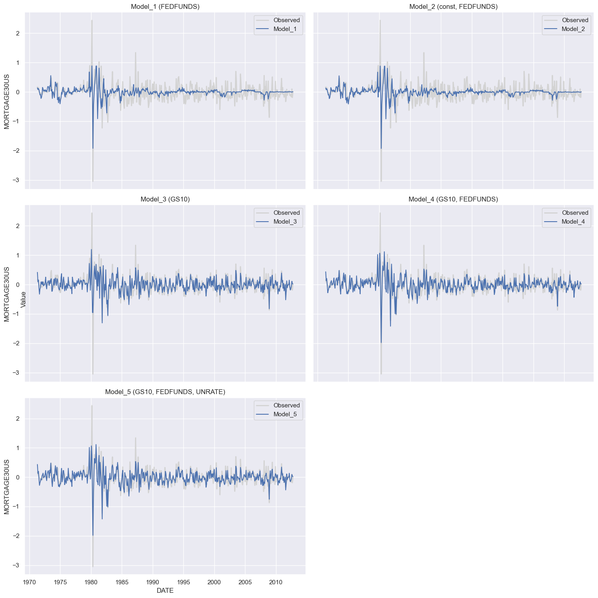
Step 3: In-Sample Forecast Levels
def in_sample_forecast_levels(models, original_data, diff_data, separate_subplots=False):
# Extract the observed data (levels) and dates
y = original_data
x = original_data.index
sns.set(style="darkgrid")
if separate_subplots:
# Calculate the number of rows and columns for the subplots
n_models = len(models)
n_cols = 2
n_rows = n_models // n_cols + (n_models % n_cols > 0)
# Set up the plot
fig, axes = plt.subplots(n_rows, n_cols, figsize=(15, n_rows * 5), sharex=True, sharey=True)
axes = axes.ravel()
# Plot the observed data (levels) and in-sample predictions for each model
for i, model in enumerate(models):
ax = axes[i]
sns.lineplot(x=x, y=y, label='Observed', linewidth=2, color='lightgrey', ax=ax)
X = model.model.exog
y_diff_pred = model.predict(X)
y_pred = np.concatenate(([y.iloc[0]], y.iloc[0] + np.cumsum(y_diff_pred)))
sns.lineplot(x=x, y=y_pred, label=f'Model_{i + 1}', linewidth=1.5, ax=ax)
# Get the independent variable names
ind_var_names = ', '.join(model.model.exog_names)
ax.set_title(f'Model_{i + 1} ({ind_var_names})')
ax.legend()
# Remove unused subplots
for j in range(i+1, n_rows * n_cols):
fig.delaxes(axes[j])
# Customize the plot
fig.text(0.5, 0.04, 'DATE', ha='center')
fig.text(0.04, 0.5, 'Value', va='center', rotation='vertical')
else:
# Set up the plot
plt.figure(figsize=(10, 6))
# Plot the observed data (levels)
sns.lineplot(x=x, y=y, label='Observed', linewidth=2, color='lightgrey')
# Plot the in-sample predictions for each model
for i, model in enumerate(models):
X = model.model.exog
y_diff_pred = model.predict(X)
y_pred = np.concatenate(([y.iloc[0]], y.iloc[0] + np.cumsum(y_diff_pred)))
sns.lineplot(x=x, y=y_pred, label=f'Model_{i + 1}', linewidth=1.5)
# Customize the plot
plt.xlabel('DATE')
plt.ylabel('Value')
plt.title('Observed Data and In-sample Predictions (Levels)')
plt.legend()
# Show the plot
plt.tight_layout()
plt.show()
models = [model_1, model_2, model_3, model_4, model_5]
original_data = df_train['MORTGAGE30US']
diff_data = df_train_diff['MORTGAGE30US']
in_sample_forecast_levels(models, original_data, diff_data, separate_subplots=False) # For a single plot with all series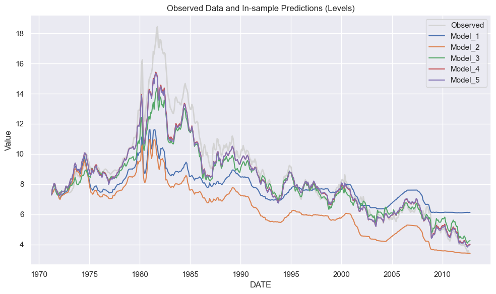
4.6. Model Evaluation
4.6.1. Out-of-Sample Analysis
Out-of-Sample Performance
def out_of_sample_performance(model_list, model_names, test_data, target_col):
# Initialize a list to store results
results = []
for fitted_model, model_name in zip(model_list, model_names):
# Extract the column names of the independent variables from the model
independent_vars = fitted_model.model.exog_names
# Separate the target variable and features in the test dataset
X_test = test_data[independent_vars]
y_test = test_data[target_col]
# Predict the test data
y_pred = fitted_model.predict(X_test)
# Calculate the residuals
residuals = y_test - y_pred
# Calculate the mean squared error and root mean squared error
mse = np.mean(residuals ** 2)
rmse_val = np.sqrt(mse)
# Store the results
model_name_with_vars = f"{model_name} ({', '.join(independent_vars)})"
results.append([model_name_with_vars, mse, rmse_val])
# Create a DataFrame to display the results
results_df = pd.DataFrame(results, columns=['Model', 'MSE', 'RMSE'])
return results_dfmodel_list = [model_3, model_4]
model_names = ['model_3', 'model_4']
results_df = out_of_sample_performance(model_list, model_names=model_names, test_data=df_test_diff, target_col='MORTGAGE30US')
display(results_df)| Model | MSE | RMSE | |
|---|---|---|---|
| 0 | model_3 (GS10) | 0.024310 | 0.155916 |
| 1 | model_4 (GS10, FEDFUNDS) | 0.027384 | 0.165482 |
Out-of-Sample Forecast
def out_of_sample_forecast(models, model_names, test_data, target_col, separate_subplots=False):
# Extract the observed data and dates
y = test_data[target_col]
x = test_data.index
sns.set(style="darkgrid")
if separate_subplots:
# Calculate the number of rows and columns for the subplots
n_models = len(models)
n_cols = 2
n_rows = n_models // n_cols + (n_models % n_cols > 0)
# Set up the plot
fig, axes = plt.subplots(n_rows, n_cols, figsize=(15, n_rows * 5), sharex=True, sharey=True)
axes = axes.ravel()
# Plot the observed data and out-of-sample predictions for each model
for i, model in enumerate(models):
ax = axes[i]
sns.lineplot(x=x, y=y, label='Observed', linewidth=2, color='lightgrey', ax=ax)
exog_names = model.model.exog_names
if 'const' in exog_names and 'const' not in test_data.columns:
X_test = test_data[[name for name in exog_names if name != 'const']]
X_test.insert(0, 'const', 1)
else:
X_test = test_data[exog_names]
y_pred = model.predict(X_test)
sns.lineplot(x=x, y=y_pred, label=f'{model_names[i]}', linewidth=1.5, ax=ax)
ax.set_title(f'{model_names[i]} ({", ".join(exog_names)})')
ax.legend()
# Remove unused subplots
for j in range(i + 1, n_rows * n_cols):
fig.delaxes(axes[j])
# Customize the plot
fig.text(0.04, 0.5, 'Value', va='center', rotation='vertical')
else:
# Set up the plot
plt.figure(figsize=(10, 6))
# Plot the observed data
sns.lineplot(x=x, y=y, label='Observed', linewidth=2, color='lightgrey')
# Plot the out-of-sample predictions for each model
for i, model in enumerate(models):
exog_names = model.model.exog_names
if 'const' in exog_names and 'const' not in test_data.columns:
X_test = test_data[[name for name in exog_names if name != 'const']]
X_test.insert(0, 'const', 1)
else:
X_test = test_data[exog_names]
y_pred = model.predict(X_test)
sns.lineplot(x=x, y=y_pred, label=f'{model_names[i]}', linewidth=1.5)
# Customize the plot
plt.ylabel('Value')
plt.title('Observed Data and Out-of-sample Predictions')
plt.legend()
# Show the plot
plt.tight_layout()
plt.show()models = [model_3, model_4]
out_of_sample_forecast(models, model_names=['model_3', 'model_4'], test_data=df_test_diff, target_col='MORTGAGE30US', separate_subplots=True)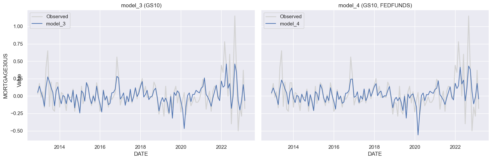
def out_of_sample_forecast_levels(models, model_names, test_data, original_data, target_col, separate_subplots=False):
# Extract the observed data and dates
y_test = test_data[target_col]
y_orig = original_data[original_data.index.isin(test_data.index)][target_col]
x = y_orig.index
sns.set(style="darkgrid")
if separate_subplots:
# Calculate the number of rows and columns for the subplots
n_models = len(models)
n_cols = 2
n_rows = n_models // n_cols + (n_models % n_cols > 0)
# Set up the plot
fig, axes = plt.subplots(n_rows, n_cols, figsize=(15, n_rows * 5), sharex=True, sharey=True)
axes = axes.ravel()
# Plot the observed data and out-of-sample predictions for each model
for i, model in enumerate(models):
ax = axes[i]
sns.lineplot(x=x, y=y_orig, label='Observed', linewidth=2, color='lightgrey', ax=ax)
exog_names = model.model.exog_names
if 'const' in exog_names and 'const' not in test_data.columns:
X_test = test_data[[name for name in exog_names if name != 'const']]
X_test.insert(0, 'const', 1)
else:
X_test = test_data[exog_names]
y_pred_diff = model.predict(X_test)
y_pred = y_pred_diff + y_orig.shift(1).values
sns.lineplot(x=x, y=y_pred, label=f'{model_names[i]}', linewidth=1.5, ax=ax)
ax.set_title(f'{model_names[i]} ({", ".join(exog_names)})')
ax.legend()
# Remove unused subplots
for j in range(i + 1, n_rows * n_cols):
fig.delaxes(axes[j])
# Customize the plot
fig.text(0.04, 0.5, 'Value', va='center', rotation='vertical')
else:
# Set up the plot
plt.figure(figsize=(10, 6))
# Plot the observed data
sns.lineplot(x=x, y=y_orig, label='Observed', linewidth=2, color='lightgrey')
# Plot the out-of-sample predictions for each model
for i, model in enumerate(models):
exog_names = model.model.exog_names
if 'const' in exog_names and 'const' not in test_data.columns:
X_test = test_data[[name for name in exog_names if name != 'const']]
X_test.insert(0, 'const', 1)
else:
X_test = test_data[exog_names]
y_pred_diff = model.predict(X_test)
y_pred = y_pred_diff + y_orig.shift(1).values
sns.lineplot(x=x, y=y_pred, label=f'{model_names[i]}', linewidth=1.5)
# Customize the plot
plt.ylabel('Value')
plt.title('Observed Data and Out-of-sample Predictions')
plt.legend()
# Show the plot
plt.tight_layout()
plt.show()
models = [model_3, model_4]
model_names = ['model_3', 'model_4']
original_data = df_test
out_of_sample_forecast_levels(models, model_names, test_data=df_test_diff, original_data=original_data, target_col='MORTGAGE30US', separate_subplots=False)